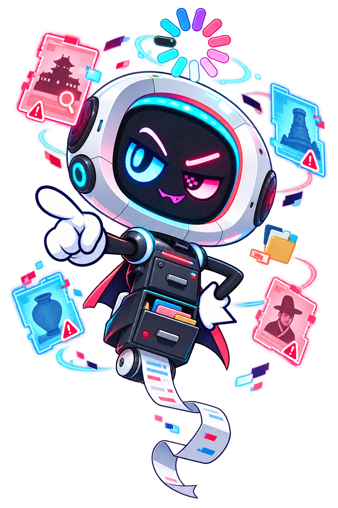
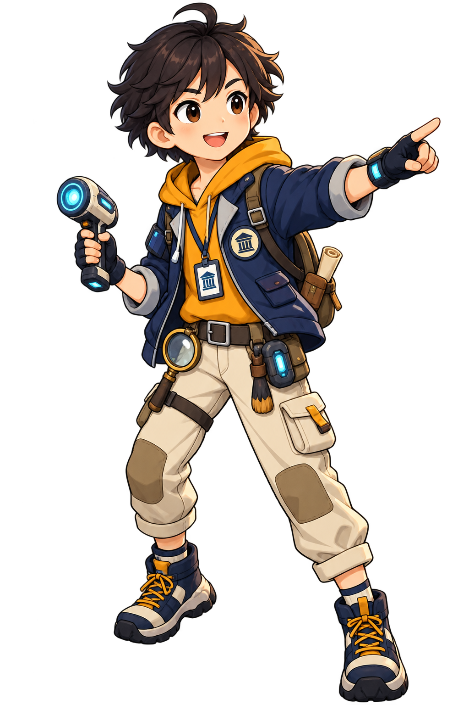
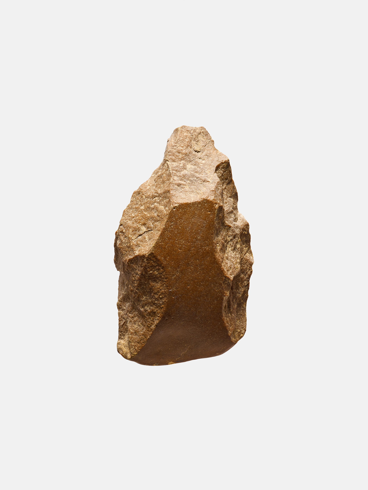
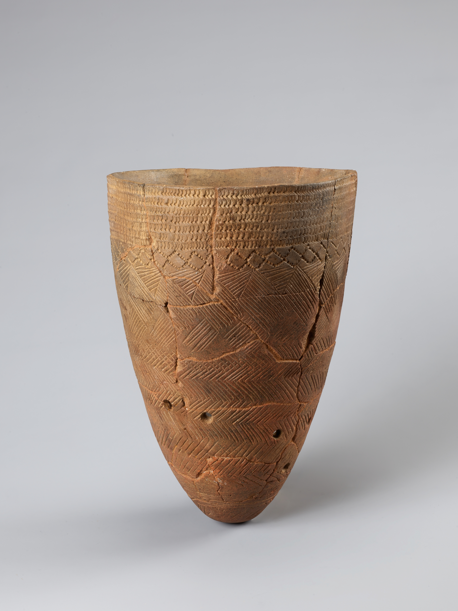
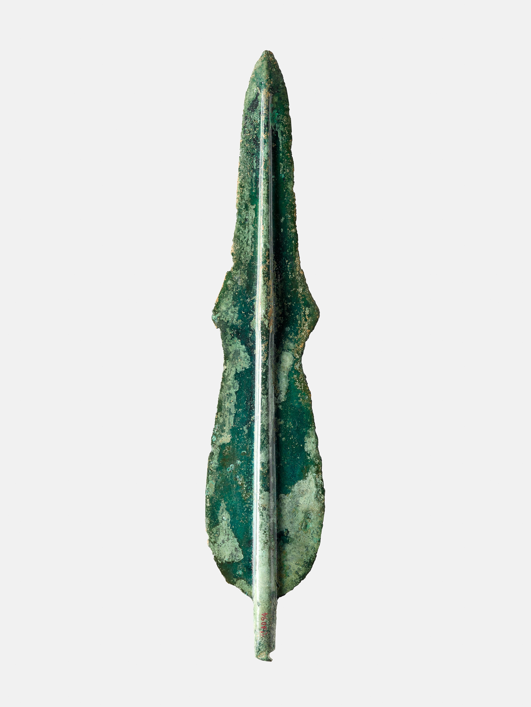
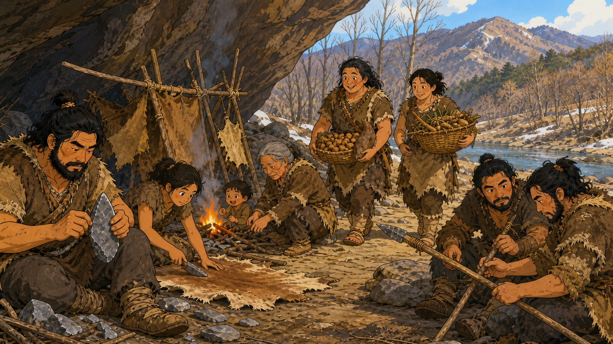
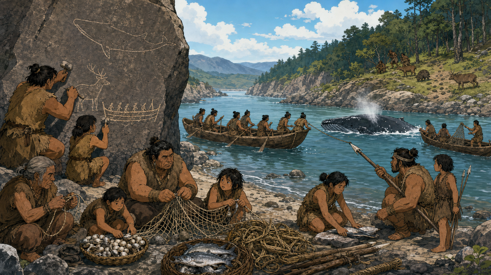

1 / 4
COMMONSENSES 04 · PREHISTORY—GOJOSEON
0호
수장고
BEFORE THE RECORD
기록이 없다는 것은
역사가 없다는 뜻일까?

문자 기록 없으면 삭제각인데요, 휴먼?



DELETE?문자 기록 없음
MISSION
실제 유물과 유적을 관찰하고, 근거 있는 추론으로 여섯 개의 전시를 복구하세요.
VAULT 0 · SIX LOCKS
봉인된 전시
완료한 전시는 다시 조사할 수 있습니다. 설전에서 패배하면 다음 전시는 열리지 않습니다.
복구율0 / 6
주제 도입 · LOCK 01
전곡리에서 발견된 이상한 돌

EVIDENCE 01 · 직접 관찰
실제 유물을 조사하라
사진에서 직접 확인할 수 있는 특징을 고르세요.
실제 유물
주먹도끼
소장 기관 원문 ↗
1 / 1
EVIDENCE 02 · 근거 있는 추론
생활 장면을 조사하라
생활 모습 재구성 이미지 · 생성형 이미지
0호 수장고 기록 관리자
증거 판정
설전
이번 전시의 해금 조건
BEFORE THE DUEL · 먼저 읽기
근거를 정리하자
사건을 진행하며 해결한 세 차례 판정을 정리합니다. 마지막 두 문제에서 관찰·생활 추론·자료의 한계를 모두 연결하세요.
차시 구조유물 판정 2문제 → 생활 추론 3문제 → 위기 판단 3문제 → 최종 설전 2문제. 전체 8문제 이상 정답이면 승리합니다.
ZERO 논리 방어선
100 / 100나의 근거력
100 / 100LOCK 01 · RESTORED
전시 복구 완료
주먹도끼
- 관찰
- 추론
- 아직 모름
EVIDENCE ARCHIVE
기억 보관함
맞힌 근거는 LEARNING, 전시를 복구하면 그 차시의 관찰과 추론이 CLEAR로 남습니다.
습득한 근거0 / 12
복구한 전시0 / 6
학예사 평판50
아직 보관한 근거가 없습니다.
설전에서 정답을 맞히면 이곳에 즉시 기록됩니다.

EPILOGUE · VAULT 0 RESTORED
기록 이전,
역사는 있었다
“정정합니다. 기록이 없다는 것은 역사가 없다는 뜻이 아니었습니다, 휴먼.”
모아가 마지막으로 묻습니다. “그럼 우리가 본 생활 장면은 전부 진짜야?”
마지막 답을 선택하세요.